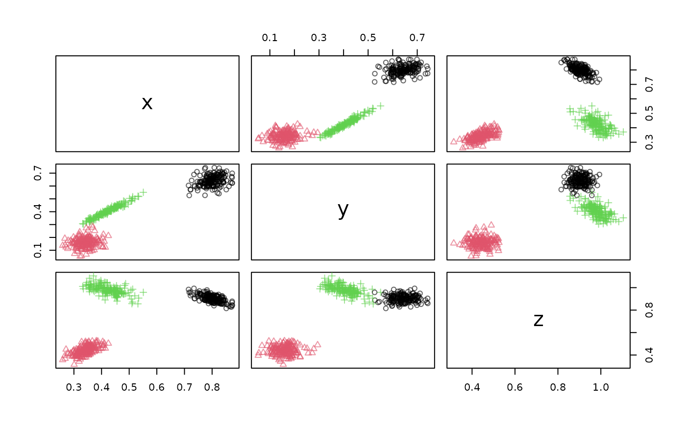

Creates a DSD_ReadStream that reads from a port.
Arguments
- host
hostname.
- port
host port.
- retry_args
a list with arguments for
retry().- ...
further arguments are passed on to
stream::DSD_ReadStream().
Value
A stream::DSD object.
See also
Other Socket:
publish_DSD_via_Socket()
Other dsd:
DSD_ReadWebService(),
publish_DSD_via_Socket(),
publish_DSD_via_WebService()
Examples
# find a free port
port <- httpuv::randomPort()
port
#> [1] 16725
# create a background DSD process sending data to the port
rp1 <- DSD_Gaussians(k = 3, d = 3) %>% publish_DSD_via_Socket(port = port)
rp1
#> PROCESS 'R', running, pid 7295.
# create a DSD that connects to the socket. Note that we need to
# specify the column names of the stream
dsd <- DSD_ReadSocket(port = port, col.names = c("x", "y", "z", ".class"))
dsd
#> Data Stream from Connection (d = 3, k = NA)
#> Class: DSD_ReadStream, DSD_R, DSD
#> connection: ->localhost:16725 (opened)
get_points(dsd, n = 10)
#> x y z .class
#> 1 0.8389765 0.7136364 0.8446784 1
#> 2 0.3677646 0.1260063 0.4315370 2
#> 3 0.4503814 0.4331341 1.0099879 3
#> 4 0.3376617 0.1074240 0.4267495 2
#> 5 0.3830056 0.3407278 1.0473855 3
#> 6 0.7867551 0.6000208 0.8965822 1
#> 7 0.8173136 0.6439941 0.8985565 1
#> 8 0.3985137 0.3679955 1.0056913 3
#> 9 0.8313149 0.5767336 0.8904050 1
#> 10 0.4006689 0.3706720 0.9941602 3
plot(dsd)

close_stream(dsd)
# end the DSD process. Note: that closing the connection above
# may already kill the process.
if (rp1$is_alive()) rp1$kill()
#> [1] TRUE
rp1
#> PROCESS 'R', finished.